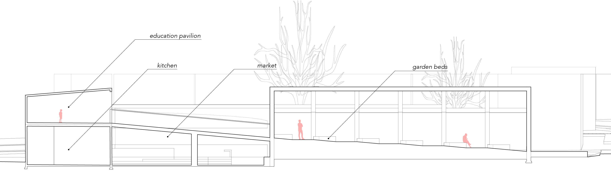
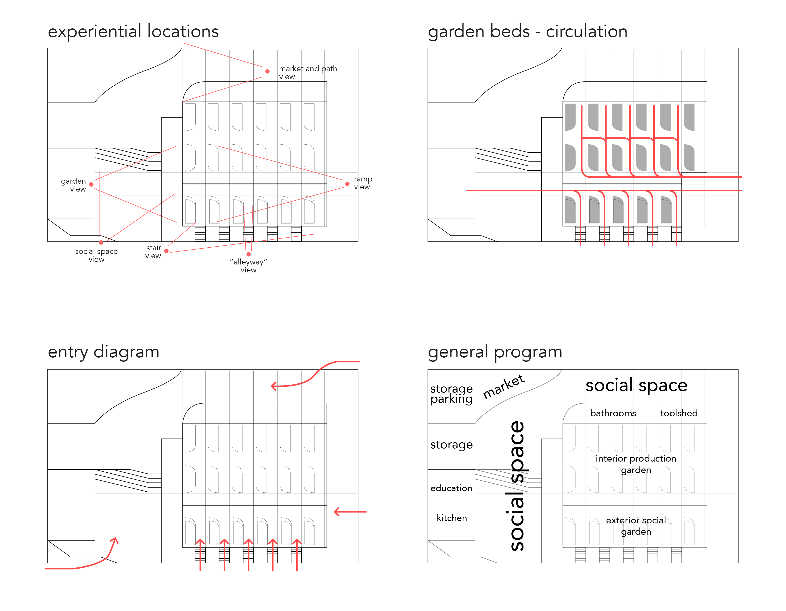
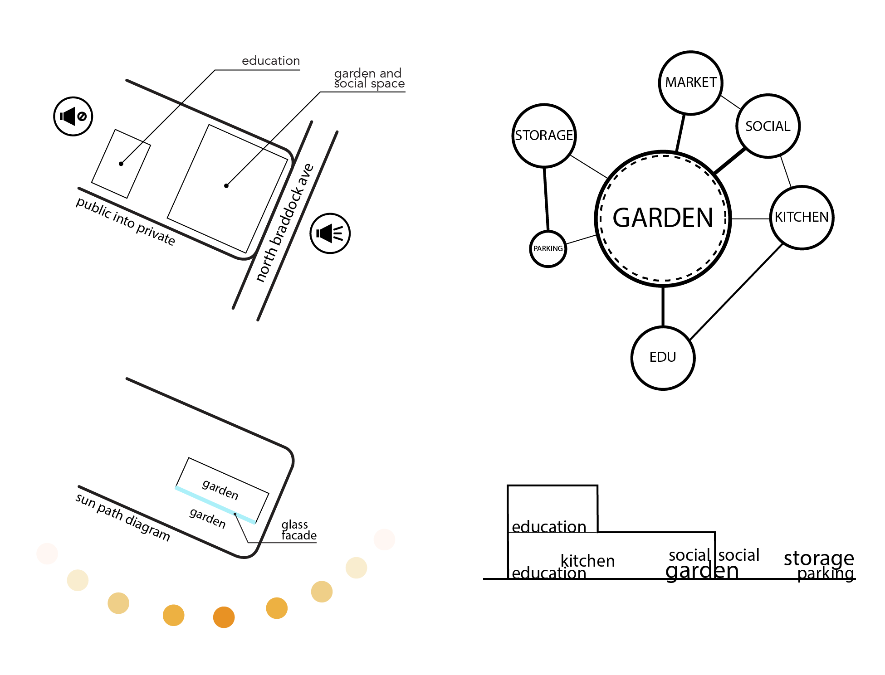
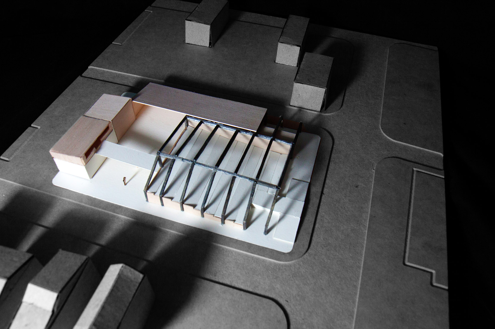
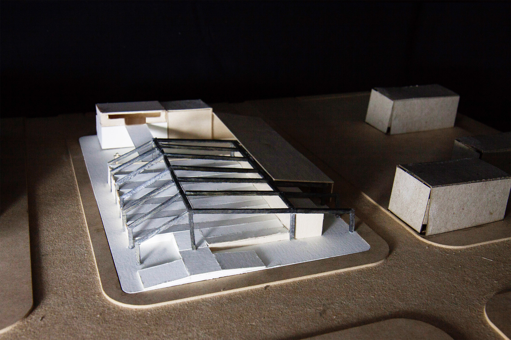

Microcosm
2017
PITTSBURGH, PA
Professor Joshua Bard
Adjunct Professor Tonya Markiewicz
The Sankofa Urban Agricultural Center is a project which focuses on using contextual studies, from population studies to geographical studies, to create a center in which a very functional central hub for a community can be formed.
For this specific design solution, the idea of a microcosm, or a "city within a city" was highlighted. The project itself houses three central "roads" that connect the whole site, turning the program into a very open plan. Various social spaces are scattered throughout the roads, allowing a slower circulation to provide a more immersive experience in the site. In addition, all of the program is ADA accessible to provide the community an undiscriminating social hub.
The site of this project pertains to the neighborhood of Homewood. During the site visit, the client informed the students that Homewood was in a "Food Apartheid" and was a food desert, due to that fact that the general population is African-American and no fresh produce is sold in the neighborhood. This project focuses on how to improve this issue by presenting an agricultural center which both helps provide for and brings unity within the neighborhood of Homewood.
The overall design of the project was generated through diagrammatic means. Starting from an adjacency web diagram, the influence of the sunpath diagram, and private to public diagram, a sectional location diagram was created, through which the general outline of the program was created. From there, more forman diagrams on how to create an inviting and effective city-like design were created which all influenced the final product.

textured plan

longitutinal section

latitudinal section

site plan

render of community space

render of corridor

generative site entry diagram

plan diagrams

programmatic diagrams

final model view 1

final model view 2